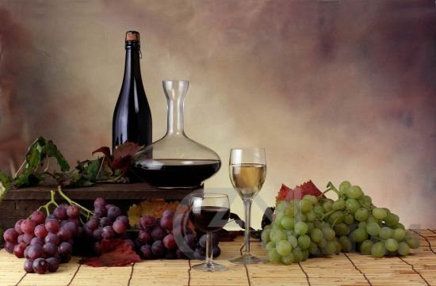

干红与干白
在酒吧里，“干红”与“干白”已成为红葡萄酒与白葡萄酒的代名词，深受青年朋友所追棒。在酒吧畅饮葡萄酒，不但要讲葡萄酒的品位，还要讲葡萄酒的文化及常识，若说起“干红”与“干白”区别时，很大一部分朋友认为，红葡萄酒是用红葡萄生产的，白葡萄酒是用白葡萄生产的，其实这是对干红、干白的一种误解，它们的主要区别在于加工的方法不同，酒的颜色上有红白之分。

区别
具体来讲，区分“干红”与“干白”主要从葡萄酒的酿造工艺上、颜色上、营养价值上、饮时温度上、鉴赏方法上等方面区分。
酿造工艺上：简而言之，“干红”是用皮红肉白或皮肉皆红的葡萄带皮发酵而成，采用皮、汁混合发酵，然后进行分离 陈酿而成；“干白”是选择用白葡萄或浅色果皮的酿酒葡萄。经过皮汁分离，取其果汁进行发酵酿制而成。 红葡萄酒的颜色、气味、口感等与酚类物质密切相关。 所以，在葡萄品种一定的条件下，葡萄汁取汁速度及其质量、影响二类香气形成的因素和葡萄汁以及葡萄酒的氧化现象即成为影响干白葡萄酒质量的重要工艺条件。
颜色上：由于“干红”用皮红肉白或皮肉皆红的葡萄带皮发酵而成，酒液中含有果皮或果肉中的有色物质，使“干红”以红色调为主，颜色一般呈深宝石红色、宝石红色、紫红色、深红色、棕红色等；“干白”因是白皮白肉或红皮白肉的葡萄经去皮发酵而成，它的颜色以黄色调为主，主要有近似无色、微黄带绿、浅黄色、禾杆黄色、金黄色等。
营养价值上：“干红”所蕴含的维生素B、核黄素、尼克酸、泛酸和本多生酸的比例都要高出“干白”。从赏味期上，由于“干白”只用汁液酿造，其单宁的含量相对较低，而“干红”是用果皮、果肉和汁液一起酿造，其单宁含量相对较高，所以一般情况下，“干红”比“干白”的酒性更稳定，赏味期也更长。
饮时温度上：“干红”更具有可操作性。专业人士做出这样一个实验，在摄氏16至18度时进行品尝红葡萄酒，就可取得最好的结果；而“干白”则以清凉状态，即为摄氏8至10度品尝为最佳，此时可以更好地尝出其风味来。两相比较，孰优孰劣一览无遗。